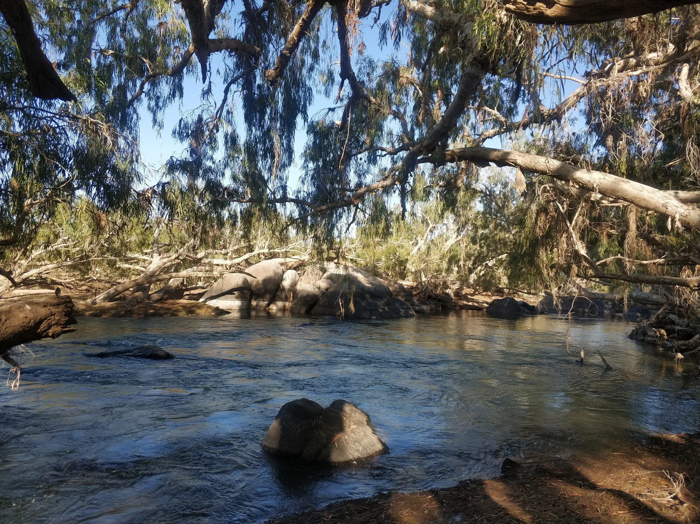
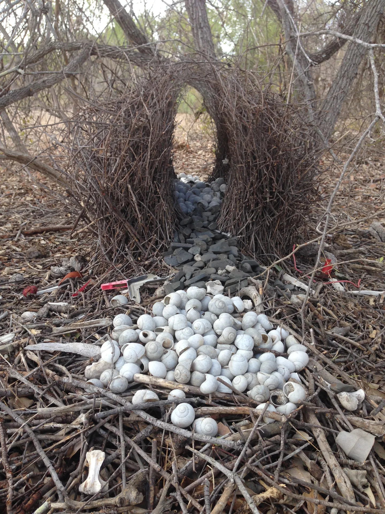

Award writing for purpose-led organisations
Let me take the awards off your plate. (Plates are for the lunch you keep forgetting to eat.)
At Keystone Impact Solutions, I find the awards you're a real fit for, track when they open, and write the submission itself, so the recognition happens without you losing a single morning to it. You stay on the work. I'll make sure the right people notice it.
Book my discovery call(opens in new tab)You're not missing out on awards just because you're small and flat out. (that's what everyone assumes. it's rarely the reason.)
Being small and flat out is real. But award-worthiness isn't a feeling, it's a fit: how well what you've done lines up with what a specific award rewards. That's a research job, and it's mine, not yours. Award Scout maps your achievements against every award worth your time, so you stop guessing you're not good enough. Most people fit more than they expected.
"Mostly we let the opportunities pass. We don't even bother replying. Or everyone tries to contribute, and it's a real scramble."A founder, on a discovery call
"But isn't nominating your own organisation a bit...much?"
Firstly, the people who ask me this are usually the ones most worth nominating (funny how that works). Secondly, no. Nominating yourself isn't standing on a chair listing how great you are. It's handing your work to an independent panel and asking: does this hold up against your criteria? That's not ego, it's accountability. In a sector this small, being backed by a panel that isn't you carries a weight nothing you say about yourself ever will.
Want the recognition without it feeling like a brag? Thought so.
Three ways to make sure the right people notice your work.
Award Scout map the landscape
For when you know you should be entering awards but there's no single list of the ones you'd actually be eligible for. I map every award worth your time against your work, rate each one for fit, and hand you a ranked shortlist, a 12-month deadline calendar, and a plain list of what to shore up before you apply. One-off. Yours to act on.
Book my discovery call(opens in new tab)Award Watch keep it current
For when the landscape's mapped and you want it kept alive without doing it yourself. Every quarter I refresh what's changed: new awards worth a look, moved deadlines, and a reassessment as your own story grows. Quarterly, because that's the real pace of the award calendar. Anything more often would be inventing urgency that isn't there.
Book my discovery call(opens in new tab)Award Story when a deadline's worth chasing
When an award's a real fit and the deadline's worth going after, I write the submission itself. Your case put as a sharp, evidenced narrative shaped to what the judges are scoring, never a data-dump of everything you've ever done. Quoted per award, scoped before any work starts. No surprises, and no writing you didn't ask for.
Book my discovery call(opens in new tab)When your grants and your awards stop feeling separate
A funded project this year becomes an award-worthy story next year. A win builds the credibility that strengthens the next application. That's Keystone Scout: one view across your grants and your awards, so nothing lapses in the gaps between them. Plenty of people start with award mapping and move across when the timing's right.
The question you're too polite to ask: "aren't a lot of these awards just pay to play?"
So I'll ask it for myself: would I steer you toward an award that's really just an entry fee and a logo you can buy? Not a chance. I don't run an award programme, I'm not affiliated with one, and I've nothing to sell you but my read on which awards actually carry weight in your sector. Part of the job is telling you which ones are worth your time and which to skip. Recognition only helps you if the people you care about respect where it came from.
Trust me, you want a scientist writing your award submission.
You'd expect one to bury your work in jargon. Opposite. I've spent years in science and conservation education, taking complex ideas and making them land with any audience, which is exactly what an award submission turns on: the judges aren't specialists in your field. I'm a PhD ecologist who's worked inside conservation, not just written about it, so I read your achievements the way a panel will, turn your impact into plain, scoreable evidence, and pitch it so someone on their fortieth entry of the night gets it fast. You be the expert on your work. I'll make them remember it.

The part I didn't write.
Olga had never entered an award in her life. Her business, BoogieCamp, brings Zumba to older and elderly people, the kind of work most judges have never seen framed properly. We worked out what the judges were scoring, shaped her achievements to it, and she came out a finalist in two categories at the 2025 AUSactive National Awards: Group Instructor of the Year and People's Choice.
"Jess made it so much easier for me to submit my entry for my first ever awards! Her responses to the criteria questions summarised everything so beautifully and celebrated my impact and my achievements so magnificently, I was left feeling 'WOW, I AM AMAZING!'. Working with Jess for my first awards submission was an easy and empowering experience."Olga Gjokmarkovic, BoogieCamp
And when I wrote the award submission for Tenkile Conservation Alliance, a conservation organisation working in Papua New Guinea, their COO put it more briefly:
"You are quite brilliant."Jean Thomas, COO, Tenkile Conservation Alliance
Before you book the call
Do you find the awards, write the submission, or both?
Both, and you can start with either. Award Scout finds them: a ranked shortlist of awards you're a genuine fit for, with deadlines and a readiness check. Award Story is the writing: when a deadline's worth chasing, I write the submission itself, quoted per award. Some organisations want only the map so they can run with it. Others hand me the whole thing. Both work.
How do I know if we're award-worthy?
You check your actual achievements against what a specific award rewards, one award at a time. Award-worthiness is a fit, not a feeling, so it's a research question with a real answer. That's what Award Scout does: it maps the awards you could realistically pursue and rates each for how strong your case is and how ready you are. Most organisations fit more than they expected.
Aren't a lot of awards just pay to play?
Some are, and those are the ones to skip. There's a real difference between an award with a credible, independent judging process and one that's mostly an entry fee and a logo. I don't run or represent any award, so I've no stake in pushing you toward one, and part of the job is telling you plainly which carry weight in your sector and which don't. Recognition only helps if the people you care about respect where it came from.
What are award judges actually looking for?
Evidence against their specific criteria, not a general account of everything you do. Most entries lose marks by describing the whole organisation instead of making the exact case the award asks for, or by claiming impact they can't back up. I write to the criteria, lead with the proof, and pitch it so a panel reading dozens of entries sees your case fast.
How much of my time will this take?
Less than you're bracing for. The research, the writing and the shaping to the criteria are mine. Your part is a conversation at the start so I understand your work, and a review before anything's submitted. Most people expect an award to eat days they don't have, which is exactly why they never enter.
How much do award writing services cost?
It depends on the work. Award Scout is a one-off project, Award Watch is a quarterly arrangement, and Award Story is quoted per award, because every award asks for something different. I scope and cost anything before it starts, so you always know the number before you commit. The quickest way to a real figure is a short discovery call.
Can I just use ChatGPT to write our award submission?
You can draft with it, but it won't win you the award on its own. AI doesn't know your sector's judges, can't tell which of your achievements a specific panel will reward, and will confidently produce generic impact language that reads like every other entry. An award submission is a fit-and-evidence job, so a real person who knows conservation and knows your work is the difference between an entry that's in and one that actually places.
Do you only work with organisations in Australia?
No. I'm based in Australia and I write for organisations wherever they are. Award programmes differ by country and sector, so the mapping and the submission are built around the awards that actually apply to you, not a fixed local list. If you're doing conservation, environmental or purpose-led work, where you're based isn't the deciding factor.
A free call to work out whether awards are even worth your time.
We'll talk through what you've done, whether there's a real fit, and where you'd start if there is. And if awards aren't your move right now? I'll say so (I'd rather tell you than sell you).
Book my discovery call(opens in new tab)